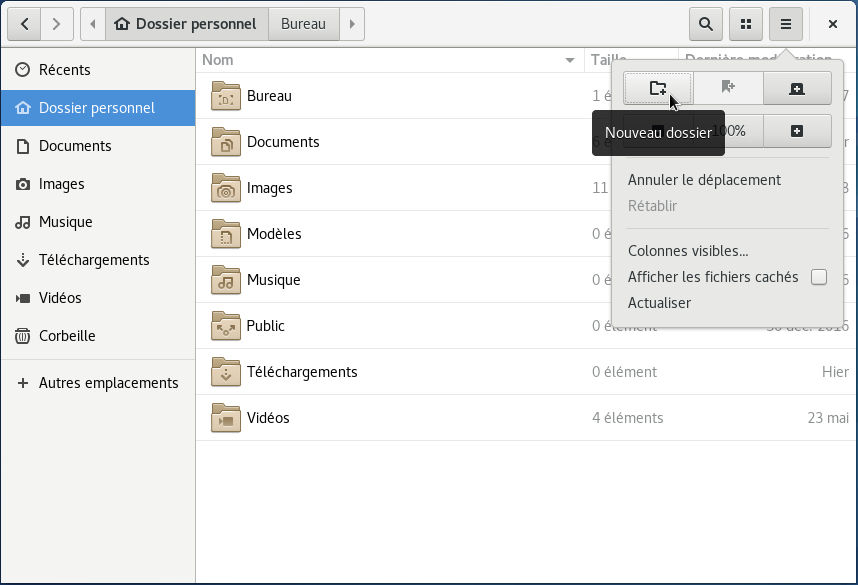
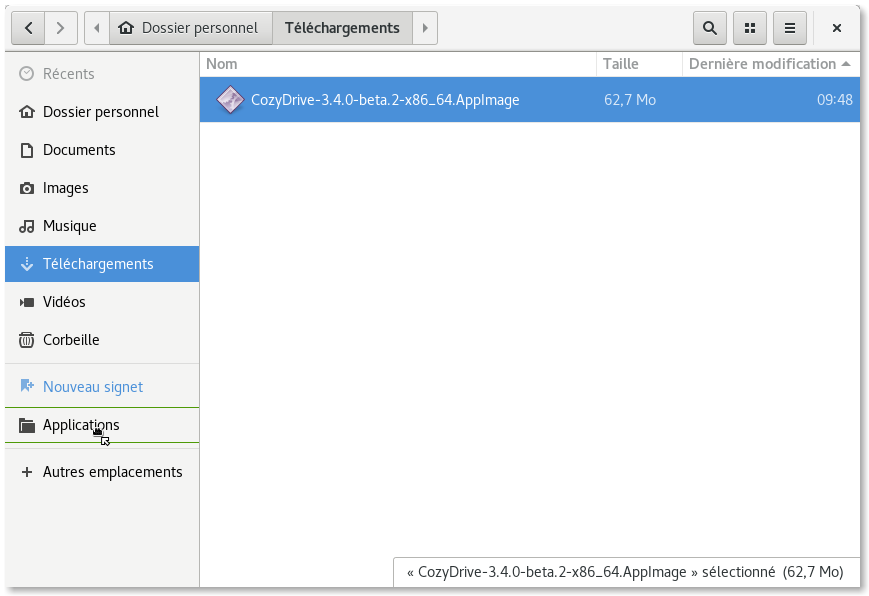

Installez le client de synchronisation sous GNU/Linux¶
Pour faciliter l’utilisation de Cozy Drive sur toutes les distributions GNU/Linux, nous utilisons le format AppImage qui permet d’exécuter l’application sans devoir l’installer. Il suffit de la télécharger et de l’exécuter
L’application est disponible pour les architectures 32 bits et 64 bits. Il suffit de la télécharger, copier le fichier dans un dossier, le rendre exécutable et de le lancer.
État du support des différentes distributions
Instructions détaillées pour installer sous Gnome¶
Click on one of these links to download Cozy Drive for your OS:
Une fois le fichier téléchargé, rendez–vous dans le dossier où votre navigateur l’a stocké. Par exemple, si vous utilisez Firefox, cliquez sur l’icône de dossier dans la liste des téléchargements.

Pour pouvoir lancer l’application, vous devez d’abord éditer ses propriétés pour la rendre exécutable. Faites un clic droit sur le fichier et choisissez Propriétés dans le menu contextuel :

Then go to the Permissions tab and check the box to make the application executable:

There’s no need to install the application, you can just run it from the folder you have downloaded it, but we recommend to move it to a dedicated folder to be able to find it easily. You can create an Applications folder inside your home directory and move the application there:



Astuce : pour retrouver plus facilement ce dossier, vous pouvez l’ajouter aux signets de votre gestionnaire de fichiers.

Une fois lancé, Cozy ajoute une icône dans votre barre d’icône. Vous pouvez interagir avec l’application en cliquant sur cette icône.
Si vous utilisez Gnome, les versions supérieures à 3.26 ne proposent plus par défaut de barre d’icônes. Pour accéder à Cozy Drive, il faut donc installer une extension Gnome restaurant cette barre d’icône, par exemple TopIcons
Voilà ! Il ne vous reste plus qu’à double-cliquer sur l’application pour la lancer et la connecter à votre serveur.
En savoir plus¶
More in deep insights on the GNU/Linux client.
Si votre distribution n’est pas supportée, vous pouvez essayer de compiler vous-même le client.